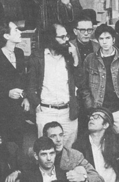
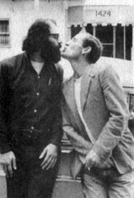
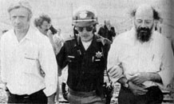
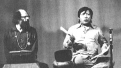
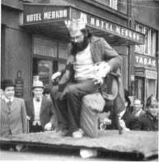
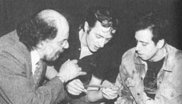

|
Allen Ginsberg1926-1997Allen Ginsberg is probably best remembered as the aging Beat/Hippie poet who was not afraid to bare it all -- to friends and to the public. During a 1956 performance in Los Angeles by Ginsberg and friend Gregory Corso for example, a persistent heckler bellowed out, "What are you guys trying to prove?" "Nakedness!" yelled Ginsberg. Then calling the bully at his bluff he added, "You want to do something big, don't you? Something really brave. Take off your clothes!" Ginsberg moved toward the guy, stripping off his own clothes. "Come and stand here, naked before the people. I dare you! A poet always stands naked before the world!" A totally nude Ginsberg threw his clothes at the heckler's feet. The man retreated, frightened, to the back of the room. The audience erupted in wild applause and cheers, then booed and hissed the heckling drunk out of the room. Later Ginsberg commented that actually he'd "meant spiritual nakedness" but had just sort of got carried away in the inspiration of the moment. For Ginsberg there was really little difference however. To bare your body, to bare your soul, to lay bare the petty, self-serving or childlike innocent workings of your mind were all part of the same effort -- the effort to beat down the façades that hide the truth about who we are and what we really need and want.
Ginsberg laid a great deal of emphasis on being open about his body, his emotions, and his sexuality (he practiced free love, was openly homosexual/bisexual, and wrote poems about his own masturbation). And ultimately, even though he spent 15 years of his life trying to transcend to some divine state of consciousness with every hallucinogen from marijuana to peyote to LSD to ayahuasca (a.k.a. "yage") -- in every possible combination --and tried chants and meditation ala Hinduism and Buddhism, he eventually returned to the importance of his humble physical being. Or more precisely, to the value of simply being present, accepting of himself, within the present moment, within his human body. Unlike friend and sometimes lover William S. Burroughs, Ginsberg eventually came to believe that it was being present to the heart -- not merely peeling back the hidden subtleties of conditioned thought -- that would be humankind's salvation. In this vein he continued to preach the importance of free love, the legalization of marijuana (a pro-social chill drug), and the rights of the individual to express himself. He marched in demonstrations against the Vietnam War, championed those arrested for drug and free speech issues, and donated most of his income to various publications and causes devoted to these same goals.

Ginsberg is probably best known for his close relationships with Beat legends Jack Kerouac (blew him), Neal Cassady (blew him too), and William S. Burroughs (and him) and the resulting literary revolution that led him to produce such famed works as "Howl" and "Kaddish". But his creativity and circle of relations continued to grow throughout the hippie period of the late 60's and early 70's with new pals John Lennon, Paul McCartney, Mick Jagger, Joan Baez, and Bob Dylan (he actually toured with Dylan and appeared with him in the movie Renaldo & Clara).
In the mid 70's he became involved with a bizarre character named Chogyam Trungpa Rinpoche, a teacher of the "Wild Wisdom" variety of Tibetan Buddhism. Unlike most Buddhist monks, Trungpa's lineage was allowed to drink, have sex, and generally carry on like maniacs. Trungpa was later involved in a scandal for ordering two students to be stripped nude at a seminar, against their will. Ginsberg who taught poetry in association with Trungpa's Naropa Institute was embarrassed and defensive over the incident. Ultimately he sided with Trungpa -- a glaring exception to his commitment to supporting the rights and dignity of the individual vis a vis an authority figure or power group.  By contrast, for example, Ginsberg was thrown out of Cuba in 1965 for refusing to shut up about Cuba's anti-marijuana stance and its penchant for throwing people in jail just for being gay. The Cubans then shipped him to cold war Czechoslovakia -- where he was again deported for failing to shut up and conform. Ginsberg was labeled an immoral menace and escorted to the airport. Afterwards portions of his confiscated diary (which contained descriptions of orgies he had attended with young Czechs and an episode of masturbating in the bathroom with a broom up his ass), was published in the youth organization paper Mlada fronta. In the 80's and 90's Ginsberg continued to very busy, both creatively and politically. He was finally receiving a slough of honors and various acknowledgements from the mainstream establishment, including his nemesis Time magazine. But young counter culture artists still sought him out for advice and collaboration. In fact he was often consulted by members of The Clash, helping them rewrite lyrics for songs on the Combat Rock album, and occasionally performing with them onstage.  Ginsberg never really slowed down creatively or sexually. But his earlier decision to be more fully present to the rhythms of the body and of the heart proved to be a useful one. He eased up on booze and hard drugs and outlived his addict/alcoholic buddies Jack Kerouac and Neal Cassady by 3 decades. Finally, at the age of 70, Irwin Allen Ginsberg died in his East Village home of liver cancer on April 6, 1997. To date Ginsberg's landmark poem "Howl" (once banned as "obscene") has been printed in at least 23 languages including Norwegian, Macedonian, Hebrew, Japanese, Polish, and (somewhat ironically) Czech.
Related TriviaAlthough Ginsberg was a staunch proponent of the movement to legalize pot, he strongly opposed (in his later years) the use of drugs that alienated the user from the body and from other people. He was greatly disturbed for example by Bob Dylan's rampant cocaine snorting during their tour together. Ginsberg immortalized the thought by penning:Jiggling yr knees blankeyed in the rain When it snows in yr nose you catch cold in yr brain |